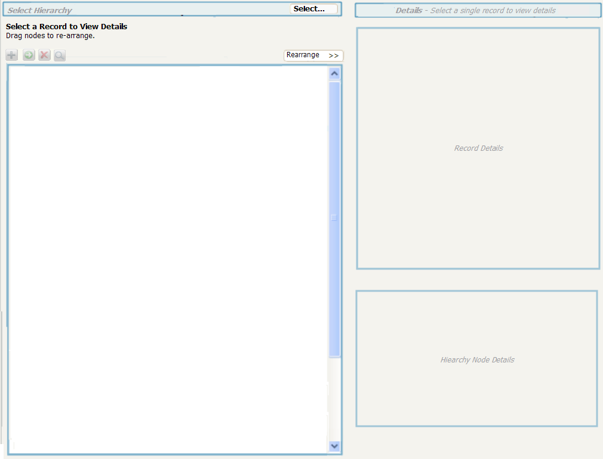
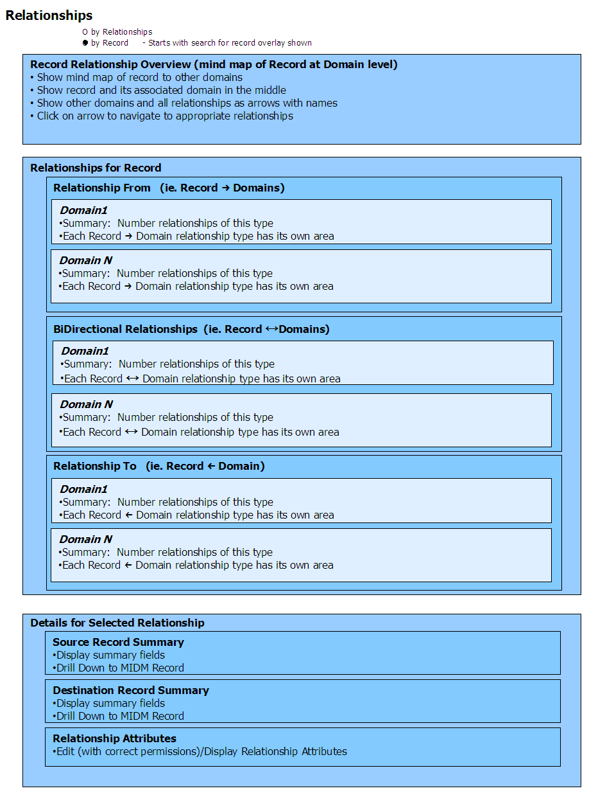

Manage->Relationship->Maintain->By Record
Use Cases
- View and maintain relationships for a single
record and all relationships to all associated records.
- View details of selected relationship (source record,
destination record and relationship attributes)
Screens
1. Select Record Overlay
When first selected a Search Dialog Overlay is shown with a message to
Select
the record to find relationships to.

Updates
Needed
- Title this dialog. Record Search.
- Option to use last record found.
- Add instructions if needed to the dialog.
- Add the option to
select a subset of domains to show relationships for. This should be
populated with the set of domains that have relationships to
the domain selected above. The user should be able to any
number
of domains. By default all domains are selected for
showing.
2. Maintain by Record
Note: The following is a functional wireframe of what this will look
like. It shows the overall organization and functionality of
the
screen.

Notes
- If any specific area has more than some number of
records (20) then in stead of showing the records show the
following
Number
records where found.
Show all
records // Only show N
records at a time and paginate
Limit
records... // Shows dialog - search
records (for associated domain) and relationship attribtues
This page lastchanged on
09-Sept-2008
15:32:00 PDT by andreakendall@dev.java.net